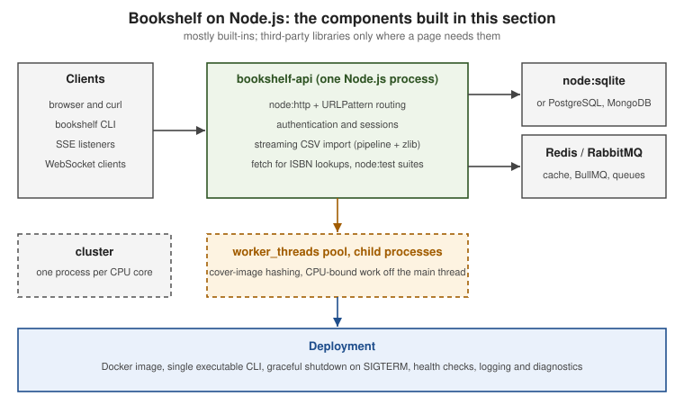

Node.js
|
This content was generated with the assistance of AI and should be verified against the official documentation before being relied on in production. |
This section is written against Node.js 26 (26.10.0, the Current line, which becomes LTS on 2026-10-28), with the differences of Node.js 24 LTS (Krypton, 24.21.0) and Node.js 22 (Jod, 22.23.3, Maintenance) called out where they matter, and npm 11 as bundled with those lines (npm 12.2.0 is the latest npm but is not bundled with any Node.js line). All versions were checked on 2026-10-03. Node.js releases a new line every year; from Node.js 27 every line becomes LTS, so the baseline is re-verified rather than assumed, and each page says which line introduced, stabilised or removed a feature. Features still marked Experimental in the official stability index are labelled as such and kept short.
What Node.js is
Node.js is an open-source, cross-platform JavaScript runtime. It combines the V8 JavaScript engine with libuv (the asynchronous I/O library), a set of C++ bindings and a JavaScript core library, and it runs your code on a single main thread driven by an event loop, handing blocking work to the operating system, a small thread pool, or worker threads. It is a runtime, not a framework: it gives you files, sockets, HTTP, streams, cryptography, a test runner and an embedded SQLite database, and leaves structure to you or to frameworks such as Express, Fastify or NestJS.
This section is for developers who:
-
know some JavaScript (see the JavaScript Development reference) and want to learn how Node.js actually works, not only how to call frameworks
-
come from Java, Python, .NET or Go and want the mental model of the event loop, modules and npm
-
maintain older Node.js code or follow older tutorials and books, and need to know what changed (CommonJS to ES modules,
dotenvto--env-file, Jest tonode:test,ts-nodeto type stripping, Corepack removal)
What’s covered
Reading path
The pages are ordered so that each one builds on the previous ones:
-
Foundations: what Node.js is, installing it, the release lines, running scripts, flags and globals
-
Modules and packages: CommonJS, ES modules, interop,
package.json, npm, workspaces and publishing -
Asynchrony: the event loop, promises, timers, events, not blocking the loop, async context and cancellation
-
Core APIs: process, errors, buffers,
util,os/path/url, terminal I/O -
Files and streams: the file system, streams, Web Streams, zlib, SQLite and databases
-
Networking: HTTP servers and clients, TLS and HTTP/2, WebSockets and SSE, TCP/UDP/DNS, hardening
-
Concurrency: worker threads, child processes, cluster
-
Testing: the built-in test runner, mocks, snapshots and coverage
-
Diagnostics: debugging, profiling, memory, reports and observability
-
Security: best practices, the permission model, cryptography
-
TypeScript and tooling: type stripping, linting and formatting
-
Building applications: REST APIs, frameworks, authentication, CLIs, queues, email, LLM APIs
-
Production: deployment, containers, single executable applications, upgrading
Running example
Every example builds Bookshelf, the same domain used by the FastAPI, NestJS and Next.js sections, so the stacks can be
compared. It is built mostly from built-ins: a JSON service on node:http storing data in node:sqlite, a bookshelf
command-line tool, a streaming CSV import, cover-image hashing in a worker_threads pool, ISBN lookups with fetch, a
live "new review" feed over Server-Sent Events, node:test suites, clustering, a single-executable build and a Docker
image. Pages that need third-party libraries extend it with Express or Fastify, database clients, BullMQ, Nodemailer,
an LLM SDK or ws. Pages build on each other, but each can be read on its own.

Related material on this site
Existing pages are linked rather than repeated; the Node.js pages add only what they lack.
| Existing page(s) | How it relates to this section |
|---|---|
Engine-level event loop, micro and macrotasks. This section owns the libuv phases, |
|
ES module syntax and a CommonJS overview. This section owns resolution, |
|
Bundlers, |
|
Linked from the testing and tooling pages rather than repeated. |
|
Web Workers, contrasted with |
|
Timers, |
|
TypeScript Getting Started, TypeScript Modules, tsconfig & Compiler Options, TypeScript Classes |
Type stripping, |
The minimal web framework on top of this runtime: routing, middleware, the request and response APIs, security, testing and production, documented in its own section. |
|
NestJS (performance, lifecycle and shutdown, deployment, configuration, debugging, Fastify, uploads, authentication) |
The same runtime primitives seen through a framework. This section documents them framework-free. |
Next.js running on Node.js: runtimes, the Node.js server, standalone output, environment variables. |
|
Dockerfiles, cache mounts, probes and termination. The Node.js Docker page shows only what is Node.js-specific. |
|
Kafka and RabbitMQ, OAuth and JWT theory, and patterns; linked from the queues and authentication pages. |
|
Engines and drivers. The databases page shows only how to use each from Node.js. |
|
CLI Frameworks for Node.js, MCP Node.js Servers, LangChain.js |
CLI frameworks, MCP and LangChain on Node.js; linked from the CLI and LLM pages. |
SSR on Node.js streams, CORS, and Lambda Node.js runtimes. |
|
Backend framework choice, including JavaScript and TypeScript on Node.js. |
Bibliography
Every source used to generate this section, each linked to its official website. Individual pages list the subset they
derive from under their own == References heading. The two books below were consulted for concept coverage and
narrative only; every code example is written against the current official documentation, which wins wherever a book
differs, and each page says where a book is outdated.
Books
-
Samer Buna, Efficient Node.js: A Beyond-the-Basics Guide, O’Reilly Media, 2025, ISBN 978-1-098-14519-4 (print): O’Reilly page; companion code: samerbuna/efficient-node
-
Jonathan Wexler, Node.js Projects: Building Real-World Web Applications and Backend APIs, O’Reilly Media, 2025, ISBN 978-1-098-17314-2 (print): O’Reilly page; companion code: JonathanWexler/oreilly-node-projects-code
Official Node.js documentation and resources
-
Learn: Getting Started, Command Line, HTTP, Manipulating Files, Asynchronous Work, Concurrency, TypeScript, Modules, Diagnostics, Test Runner, Node-API and Userland Migrations
-
API reference, including the stability index, the command-line options and the deprecations
-
Releases: previous releases, release working group, the evolving release schedule announcement and the release blog posts for v22 to v26
-
libuv, V8 and Undici (nodejs/undici)
-
Node.js project repositories: docker-node (official Docker image), node-gyp, node-addon-api, postject, single-executable team, amaro (type stripping), Corepack, package-examples and userland-migrations, run through Codemod
Official npm documentation
-
npm documentation: packages and modules, SemVer,
package.json,package-lock.json, scripts, workspaces, config,npx,npm ci,npm audit, publishing, staged publishing, provenance, trusted publishers, access tokens, registry signatures, threats and mitigations and the npm 12 changelog -
npm CLI repository and its release notes
-
GitHub changelog posts on npm trusted publishing with OIDC and npm classic token revocation
Ecosystem projects
-
Web frameworks: Express, Fastify, Koa, hapi, Hono, NestJS and AdonisJS
-
Express middleware: express-session, connect-redis, express-rate-limit, csurf (deprecated), csrf-csrf and csrf-sync
-
Fastify plugins and tools: Fastify LTS policy, fastify-plugin, @fastify/cookie, @fastify/jwt, @fastify/csrf-protection, @fastify/rate-limit, @fastify/static, @fastify/view, @fastify/express, @fastify/middie and light-my-request
-
Data: node-postgres, MongoDB Node.js driver, node-redis, Prisma, Drizzle, Sequelize, Mongoose, TypeORM and Knex
-
Databases: SQLite documentation, PostgreSQL documentation and Redis documentation
-
Queues, scheduling and workers: BullMQ, amqplib (repository), RabbitMQ, node-cron, node-schedule and Piscina
-
Email, feeds, scraping and auth: Nodemailer, Cheerio, Puppeteer, Playwright, Passport, jsonwebtoken, jose, RSS 2.0 specification, Gmail email sender guidelines and Yahoo sender best practices
-
Language and tooling: TypeScript (with the TypeScript 6.0 and TypeScript 7.0 announcements and
@types/node), tsx, esbuild, Rolldown, ESLint, typescript-eslint, eslint-plugin-n, globals, eslint-config-prettier, Prettier, Husky, lint-staged, Jest, Vitest, Mocha and the Create React App sunset notice -
Polyfills and proposals: urlpattern-polyfill and WICG scheduling APIs
-
Package and version managers: pnpm (installation), Yarn (installation), nvm, fnm, Volta
-
Load testing: Artillery and autocannon
-
Observability: pino, OpenTelemetry JS (repository), prom-client, Prometheus, Brendan Gregg: flame graphs and FlameGraph
-
Comparison only: Deno (documentation), Bun (documentation)
LLM SDKs and APIs
-
Google: Google Gen AI SDK for JavaScript (repository) and the Gemini API documentation, including its model deprecations
-
OpenAI: openai-node and the OpenAI API documentation
-
Anthropic: anthropic-sdk-typescript and the Claude Developer Platform documentation
-
OWASP GenAI: LLM01 prompt injection and LLM05 improper output handling
Runtimes, tooling and operations
-
Containers and orchestration: Docker documentation, Docker official Node.js image and Kubernetes documentation
-
Process management and proxies: PM2, systemd.service, nginx documentation and the AWS Application Load Balancer attributes
-
Linux manual pages: signal(7) and kill(2); Debian apt-key(8) and sources.list(5)
-
TLS certificates: openssl-req and openssl-x509 in the OpenSSL documentation
-
Lifecycles and retirements: MongoDB software lifecycle schedules and GitHub: Sunsetting Atom
-
Debugging and profiling: Chrome DevTools Protocol, Chrome DevTools documentation and VS Code Node.js debugging
-
Code signing: Apple notarization and Microsoft SignTool
-
Source control and CI: Git documentation and GitHub Actions documentation
Specifications and standards
-
ECMAScript, the Temporal proposal and the explicit resource management proposal
-
WHATWG standards: Fetch, Streams, URL, Encoding, Compression, WebSockets, Server-Sent Events and URLPattern
-
W3C: User Timing
-
Web platform references: MDN Web Docs, web.dev: Fetch Metadata, Chrome: removing HTTP/2 server push, Chrome: 103 Early Hints, WebAssembly and WASI
-
IETF: RFC 9110 HTTP semantics, RFC 9112 HTTP/1.1, RFC 9113 HTTP/2, RFC 6455 WebSocket (also on IETF Datatracker), RFC 6265 cookies, RFC 9457 problem details, RFC 7239 Forwarded, RFC 8297 103 Early Hints, RFC 9309 robots.txt, RFC 8305 Happy Eyeballs v2
-
IETF TLS and tokens: RFC 8446 TLS 1.3, RFC 6066 TLS extensions (SNI), RFC 7301 ALPN, RFC 7519 JWT and RFC 8725 JWT best current practices
-
IETF email and feeds: RFC 6376 DKIM, RFC 7208 SPF, RFC 7489 DMARC, RFC 2369 mailing-list headers, RFC 8058 one-click unsubscribe and RFC 4287 Atom
-
Security: OWASP Cheat Sheet Series (including the Password Storage Cheat Sheet), OWASP Top 10, CWE, NIST SP 800-63B, Sigstore, OpenSSF Scorecard and OpenSSF Best Practices Badge